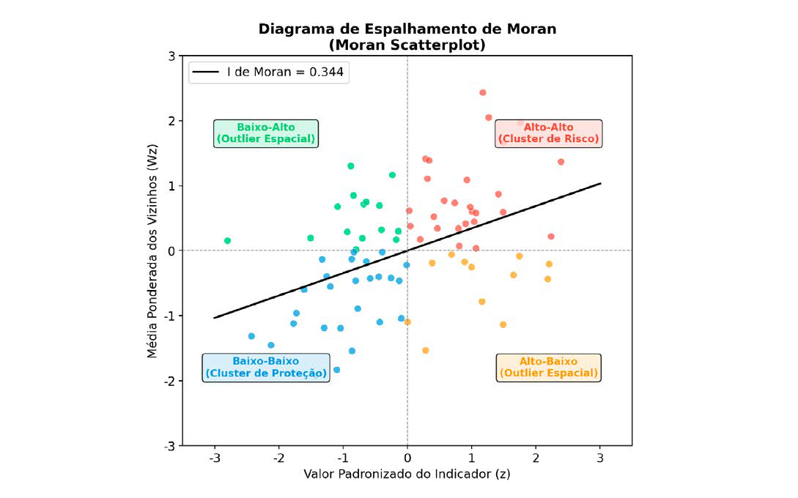
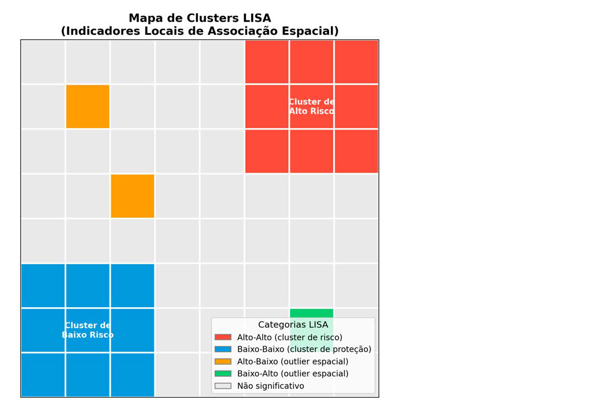
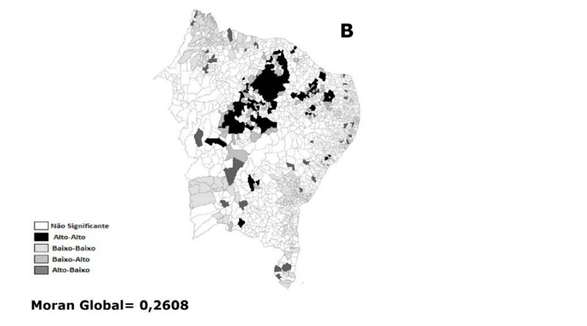

Módulo 3 | Aula 6
Análise Espacial de Dados – Área
Análise Local: Identificação de Clusters (LISA)
Um índice global como o de Moran pode mascarar padrões locais importantes. A autocorrelação pode ser forte em uma parte do mapa e fraca em outra. Para superar isso, utilizamos os Indicadores Locais de Associação Espacial (LISA - Local Indicators of Spatial Association) (Câmara et.al, 2004; Santos & Souza, 2007).
A forma mais comum de LISA é o Índice de Moran Local. Ele calcula um valor de Moran para cada área individualmente, permitindo identificar a contribuição de cada área para o padrão global e localizar os clusters.
A análise LISA classifica as áreas com autocorrelação local significativa em quatro categorias, que são frequentemente visualizadas em um Mapa de Clusters LISA e no Diagrama de Espalhamento de Moran:
Figura 2 - Diagrama de Espalhamento de Moran (Moran Scatterplot).

Fonte: Elaborado pelos autores (2026).
A figura explica visualmente como o Diagrama de Moran separa diferentes tipos de padrões espaciais:
Clusters Alto-Alto e Baixo-Baixo → valores semelhantes agrupados.
Outliers Alto-Baixo e Baixo-Alto → valores contrastantes posicionados lado a lado.
A inclinação da reta indica grau de dependência espacial do indicador.
Figura 5 - Mapa de Clusters LISA.

A figura ilustra um cenário típico de análise LISA:
Dois grandes clusters:
- um de alto risco (vermelho)
- um de baixo risco (azul)
Outliers espalhados (laranja e verde), representando áreas que contrastam com seus vizinhos.
A maior parte do mapa é não significativa, indicando ausência de padrões espaciais relevantes nessas células.
Fonte: Elaborado pelos autores (2026).
| Categoria | Descrição | Interpretação em Saúde |
|---|---|---|
| Alto-Alto | Uma área com alto valor do indicador, cercada por vizinhos que também têm altos valores. | Cluster de Risco: Aglomerado de áreas com alta prioridade para intervenção. |
| Baixo-Baixo | Uma área com baixo valor do indicador, cercada por vizinhos que também têm baixos valores. | Cluster de Baixo Risco: Aglomerado de áreas com bons indicadores de saúde. |
| Alto-Baixo | Uma área com alto valor, ercada por vizinhos com baixos valores. | Outlier Espacial: Uma "ilha" de alto risco em uma "vizinhança" de baixo risco. |
| Baixo-Alto | Uma área com baixo valor, cercada por vizinhos com altos valores. | Outlier Espacial: Uma "ilha" de baixo risco em uma "vizinhança" de alto risco. |
Essa técnica é poderosa para a vigilância em saúde, pois permite identificar não apenas os clusters de risco (Alto-Alto), mas também áreas que podem ter fatores de proteção (Baixo-Baixo) ou que representam transições abruptas no espaço (Alto-Baixo e Baixo-Alto).
Voltando ao estudo sobre mortalidade por suicídio no Nordeste brasileiro trabalhando acima, temos uma análise de Moran Local com identificação dos clusters das Taxas de Mortalidade por suicídio, com LISA estatisticamente significativo (MoranMap).

No mapa podemos observar verifica-se a presença de um aglomerado de alta taxa de mortalidade por suicídio entre os municípios dos Estados do Ceará e Piauí (municípios coloridos de preto).
Fonte: Cadernos de Saúde Coletiva. Disponível em: https://doi.org/10.1590/1414-462X201700030015
Outros estudos recentes no Brasil têm usado LISA para identificar clusters de mortalidade infantil (Dilélio, et.al, 2024) e para analisar a distribuição espacial do câncer de boca e sua relação com determinantes de saúde (Marsicano et al., 2025).